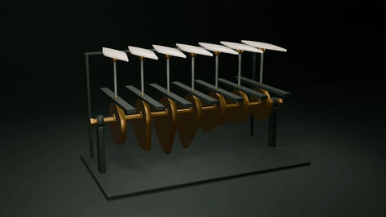

同一根黄铜轴带动七枚凸轮，依次托起白陶叶片，形成中央高、两端低的一道弧。

此 GIF 为代码合成，并非图像工具原生 GIF 输出。
Blender 4.3.2 + Python 原创声音 + FFmpeg
20 秒，1280×720 / 24 fps，480 个场景时点，H.264/AAC。完整解码、原包 CRC 与 12 个成员哈希已核。源包保留完整 Blender 场景与时轴；最终静止段采用经核验的缓存。完整原速连续观看与主观听审尚未完成；技术检查不等于用户艺术验收。
图形、动画、音乐与声效为本任务原创程序制作，未使用外部图片、采样音乐或三维模型。依赖工具保留各自许可。未作穷尽相似性检索，不作版权法律保证；公开复用许可尚未选定。